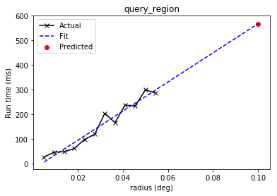

vo_conesearch¶Perform a cone search around M31 using a web service.
Write the result out to a LaTeX table.
Perform a SIMBAD query using the cone search result.
Extract metadata from the cone search catalog.
Sort cone search results by angular distance.
Search multiple cone search services at once (synchronously and asynchronously).
Estimate the run time of a cone search.
astroquery, table, coordinates, units, vo_conesearch, LaTex, SIMBAD, matplotlib
This tutorial desmonstrates the Cone Search subpackage, which allows you to query a catalog of astronomical sources and obtain those that lie within a cone of a given radius around the given position.
In[1]:
# Python standard library
import time
import warnings
# Third-party software
import numpy as np
# Astropy
from astropy import coordinates as coord
from astropy import units as u
from astropy.table import Table
# Astroquery. This tutorial requires 0.3.5 or greater.
import astroquery
from astroquery.simbad import Simbad
from astroquery.vo_conesearch import conf, conesearch, vos_catalog
# Set up matplotlib
import matplotlib.pyplot as plt
%matplotlib inline
If you are running an older version of astroquery, you might need to
set vos_baseurl yourself, as follows.
In[2]:
from astropy.utils import minversion
if not minversion(astroquery, '0.3.10'):
conf.vos_baseurl = 'https://astroconda.org/aux/vo_databases/'
To start, it might be useful to list the available Cone Search catalogs first. By default, catalogs that pass nightly validation are included. Validation is hosted by Space Telescope Science Institute (STScI).
In[3]:
conesearch.list_catalogs()
Out[3]:
['Guide Star Catalog 2.3 Cone Search 1',
'SDSS DR7 - Sloan Digital Sky Survey Data Release 7 1',
'SDSS DR7 - Sloan Digital Sky Survey Data Release 7 2',
'SDSS DR7 - Sloan Digital Sky Survey Data Release 7 3',
'SDSS DR7 - Sloan Digital Sky Survey Data Release 7 4',
'SDSS DR8 - Sloan Digital Sky Survey Data Release 8 1',
'SDSS DR8 - Sloan Digital Sky Survey Data Release 8 2',
'The HST Guide Star Catalog, Version 1.1 (Lasker+ 1992) 1',
'The HST Guide Star Catalog, Version 1.2 (Lasker+ 1996) 1',
'The HST Guide Star Catalog, Version GSC-ACT (Lasker+ 1996-99) 1',
'The USNO-A2.0 Catalogue (Monet+ 1998) 1',
'Two Micron All Sky Survey (2MASS) 1',
'Two Micron All Sky Survey (2MASS) 2']
Next, let’s pick an astronomical object of interest. For example, M31.
In[4]:
c = coord.SkyCoord.from_name('M31', frame='icrs')
print(c)
Out[4]:
<SkyCoord (ICRS): (ra, dec) in deg
(10.68470833, 41.26875)>
By default, a basic Cone Search goes through the list of catalogs and
stops at the first one that returns non-empty VO table. Let’s search
for objects within 0.1 degree around M31. You will see a lot of warnings
that were generated by VO table parser but ignored by Cone Search
service validator. VO compliance enforced by Cone Search providers is
beyond the control of astroquery.vo_conesearch package.
The result is an Astropy table.
In[5]:
result = conesearch.conesearch(c, 0.1 * u.degree)
Out[5]:
Trying http://gsss.stsci.edu/webservices/vo/ConeSearch.aspx?CAT=GSC23&
WARNING: W50: http://gsss.stsci.edu/webservices/vo/ConeSearch.aspx?CAT=GSC23RA=10.68470833&DEC=41.26875&SR=0.1&VERB=1:154:0: W50: Invalid unit string 'pixel' [astropy.io.votable.tree]
In[6]:
print('First non-empty table returned by', result.url)
print('Number of rows is', len(result))
Out[6]:
First non-empty table returned by http://gsss.stsci.edu/webservices/vo/ConeSearch.aspx?CAT=GSC23
Number of rows is 4028
In[7]:
print(result)
Out[7]:
objID gsc2ID gsc1ID ... multipleFlag compassGSC2id Mag
... mag
-------------- ---------------- ------ ... ------------ ------------- -------
23323175812944 00424433+4116085 ... 0 6453800072293 9.453
23323175812948 00424403+4116069 ... 0 6453800072297 9.321
23323175812933 00424455+4116103 ... 0 6453800072282 10.773
23323175812939 00424464+4116092 ... 0 6453800072288 9.299
23323175812930 00424403+4116108 ... 0 6453800072279 11.507
23323175812931 00424464+4116106 ... 0 6453800072280 9.399
23323175812973 00424446+4116016 ... 0 6453800072322 12.07
23323175812966 00424398+4116028 ... 0 6453800072315 12.136
23323175812979 00424420+4116009 ... 0 6453800072328 10.065
23323175812958 00424377+4116045 ... 0 6453800072307 12.446
... ... ... ... ... ... ...
1330012229027 N330012229027 ... 0 6453800029027 20.3122
1330012247547 N330012247547 ... 0 6453800047547 21.5449
1330012244072 N330012244072 ... 0 6453800044072 20.9598
1330012248107 N330012248107 ... 0 6453800048107 21.6947
133001227000 N33001227000 ... 0 6453800007000 20.1382
1330012244001 N330012244001 ... 0 6453800044001 21.8968
1330012228861 N330012228861 ... 0 6453800028861 20.3572
1330012212014 N330012212014 ... 0 6453800012014 16.5079
1330012231849 N330012231849 ... 0 6453800031849 20.2869
1330012210212 N330012210212 ... 0 6453800010212 20.2767
Length = 4028 rows
This table can be manipulated like any other Astropy table; e.g., re-write the table into LaTeX format.
In[8]:
result.write('my_result.tex', format='ascii.latex', overwrite=True)
You can now use your favorite text editor to open the my_result.tex
file, but here, we are going to read it back into another Astropy table.
Note that the extra data_start=4 option is necessary due to the
non-roundtripping nature of LaTeX reader/writer (see astropy issue
5205).
In[9]:
result_tex = Table.read('my_result.tex', format='ascii.latex', data_start=4)
print(result_tex)
Out[9]:
objID gsc2ID gsc1ID ... multipleFlag compassGSC2id Mag
-------------- ---------------- ------ ... ------------ ------------- -------
23323175812944 00424433+4116085 -- ... 0 6453800072293 9.453
23323175812948 00424403+4116069 -- ... 0 6453800072297 9.321
23323175812933 00424455+4116103 -- ... 0 6453800072282 10.773
23323175812939 00424464+4116092 -- ... 0 6453800072288 9.299
23323175812930 00424403+4116108 -- ... 0 6453800072279 11.507
23323175812931 00424464+4116106 -- ... 0 6453800072280 9.399
23323175812973 00424446+4116016 -- ... 0 6453800072322 12.07
23323175812966 00424398+4116028 -- ... 0 6453800072315 12.136
23323175812979 00424420+4116009 -- ... 0 6453800072328 10.065
23323175812958 00424377+4116045 -- ... 0 6453800072307 12.446
... ... ... ... ... ... ...
133001226993 N33001226993 -- ... 0 6453800006993 20.2829
1330012229027 N330012229027 -- ... 0 6453800029027 20.3122
1330012247547 N330012247547 -- ... 0 6453800047547 21.5449
1330012244072 N330012244072 -- ... 0 6453800044072 20.9598
1330012248107 N330012248107 -- ... 0 6453800048107 21.6947
133001227000 N33001227000 -- ... 0 6453800007000 20.1382
1330012244001 N330012244001 -- ... 0 6453800044001 21.8968
1330012228861 N330012228861 -- ... 0 6453800028861 20.3572
1330012212014 N330012212014 -- ... 0 6453800012014 16.5079
1330012231849 N330012231849 -- ... 0 6453800031849 20.2869
1330012210212 N330012210212 -- ... 0 6453800010212 20.2767
Length = 4028 rows
Cone Search results can also be used in conjuction with other types of queries. For example, you can query SIMBAD for the first entry in your result above.
In[10]:
# Due to the unpredictability of external services,
# The first successful query result (above) might differ
# from run to run.
#
# CHANGE THESE VALUES to the appropriate RA and DEC
# column names you see above, if necessary.
# These are for http://gsss.stsci.edu/webservices/vo/ConeSearch.aspx?CAT=GSC23&
ra_colname = 'ra'
dec_colname = 'dec'
In[11]:
# Don't run this cell if column names above are invalid.
if ra_colname in result.colnames and dec_colname in result.colnames:
row = result[0]
simbad_obj = coord.SkyCoord(ra=row[ra_colname]*u.deg, dec=row[dec_colname]*u.deg)
print('Searching SIMBAD for\n{}\n'.format(simbad_obj))
simbad_result = Simbad.query_region(simbad_obj, radius=5*u.arcsec)
print(simbad_result)
else:
print('{} or {} not in search results. Choose from: {}'.format(
ra_colname, dec_colname, ' '.join(result.colnames)))
Out[11]:
Searching SIMBAD for
<SkyCoord (ICRS): (ra, dec) in deg
(10.684737, 41.269035)>
MAIN_ID RA ... COO_BIBCODE
"h:m:s" ...
------------------------------- ------------ ... -------------------
NAME P2B Cluster 00 42 44.34 ... 2010ApJ...710..755G
[LFG93] P3 00 42 44.34 ... 2010ApJ...710..755G
NAME M31* 00 42 44.33 ... 1993ApJ...411L.107C
[K2002] J004244.35+411608.9 00 42 44.351 ... 2002ApJ...577..738K
[HPH2013] 165 00 42 44.34 ... 2013A&A...555A..65H
[HPH2013] 164 00 42 44.30 ... 2013A&A...555A..65H
[LFG93] P1 00 42 44.37 ... 2010ApJ...710..755G
[KPM2002] G121.1741-21.5730 00 42 44.27 ... 2002AJ....124.2990K
[O2006] QSS 8 00 42 44.365 ... 2002ApJ...577..738K
[HPH2013] 167 00 42 44.36 ... 2013A&A...555A..65H
... ... ... ...
CXOGMP J004244.2+411608 00 42 44.2 ... 2001A&A...365L.195S
[HPH2013] 170 00 42 44.40 ... 2013A&A...555A..65H
XMMM31 J004244.1+411607 00 42 44.19 ... 2005A&A...434..483P
[HPH2013] 172 00 42 44.47 ... 2013A&A...555A..65H
[HPH2013] 169 00 42 44.39 ... 2013A&A...555A..65H
M31N 2004-09b 00 42 44.45 ... 2007A&A...465..375P
[HPH2013] 166 00 42 44.355 ... 2002ApJ...577..738K
[PSC2013] 9 00 42 44.060 ... 2013MNRAS.430.1219P
[LGF2011] S1 00 42 44.36 ... 2011ApJ...728L..10L
NAME Nova Treffers 1993 in M 31 00 42 44 ...
Length = 24 rows
Now back to Cone Search… You can extract metadata of this Cone Search catalog.
In[12]:
my_db = vos_catalog.get_remote_catalog_db(conf.conesearch_dbname)
my_cat = my_db.get_catalog_by_url(result.url + '&')
print(my_cat.dumps())
Out[12]:
{
"authenticated_only": 0,
"cap_description": "",
"cap_index": 1,
"cap_type": "conesearch",
"content_level": "research",
"content_type": "catalog",
"created": "12/4/2008 3:29:11 PM",
"creator_seq": "",
"duplicatesIgnored": 1,
"intf_index": 1,
"intf_role": "std",
"intf_type": "vs:paramhttp",
"ivoid": "ivo://archive.stsci.edu/gsc/gsc2.3",
"mirror_url": "",
"query_type": "",
"reference_url": "http://gsss.stsci.edu/Catalogs/GSC/GSC2/GSC2.htm",
"region_of_regard": NaN,
"res_description": "The Guide Star Catalog II (GSC-II) is an all-sky optical catalog based on 1" resolution scans of the photographic Sky Survey plates, at two epochs and three bandpasses, from the Palomar and UK Schmidt telescopes. This all-sky catalog will ultimately contains positions, proper motions, classifications, and magnitudes in multiple bandpasses for almost a billion objects down to approximately Jpg=21, Fpg=20. The GSC-II is currently used for HST Bright Object Protection and HST pointing. Looking ahead, the GSC-II will form the basis of the Guide Star Catalog for JWST. This was constructed in collaboration with ground-based observatories for use with the GEMINI, VLT and GALILEO telescopes",
"res_subject": "Observational astronomy",
"res_type": "vs:catalogservice",
"res_version": "2.3.2",
"result_type": "",
"rights": "",
"rights_uri": "",
"short_name": "GSC23",
"source_format": "",
"source_value": "",
"standard_id": "ivo://ivoa.net/std/conesearch",
"std_version": "",
"title": "Guide Star Catalog 2.3 Cone Search",
"updated": "2/13/2020 5:10:38 PM",
"url": "http://gsss.stsci.edu/webservices/vo/ConeSearch.aspx?CAT=GSC23&",
"url_use": "base",
"validate_expected": "good",
"validate_network_error": null,
"validate_nexceptions": 0,
"validate_nwarnings": 2,
"validate_out_db_name": "good",
"validate_version": "1.2",
"validate_warning_types": [
"W50"
],
"validate_warnings": [
"/var/www/astroconda.org/html/aux/vo_databases/daily_20210518/results/91/13/e0bb2f53e1be973136ff8afe5ae9/vo.xml:154:0: W50: Invalid unit string 'pixel'",
"/var/www/astroconda.org/html/aux/vo_databases/daily_20210518/results/91/13/e0bb2f53e1be973136ff8afe5ae9/vo.xml:154:0: W50: Invalid unit string 'pixel'"
],
"validate_xmllint": true,
"validate_xmllint_content": "/var/www/astroconda.org/html/aux/vo_databases/daily_20210518/results/91/13/e0bb2f53e1be973136ff8afe5ae9/vo.xml validatesn",
"waveband": "optical",
"wsdl_url": ""
}
If you have a favorite catalog in mind, you can also perform Cone Search
only on that catalog. A list of available catalogs can be obtained by
calling conesearch.list_catalogs(), as mentioned above.
In[13]:
result = conesearch.conesearch(
c, 0.1 * u.degree, catalog_db='The USNO-A2.0 Catalogue (Monet+ 1998) 1')
Out[13]:
Trying http://vizier.u-strasbg.fr/viz-bin/conesearch/I/252/out?
In[14]:
print('Number of rows is', len(result))
Out[14]:
Number of rows is 3
Let’s explore the 3 rows of astronomical objects found within 0.1 degree of M31 in the given catalog and sort them by increasing distance. For this example, the VO table has several columns that might include:
_r = Angular distance (in degrees) between object and M31
USNO-A2.0 = Catalog ID of the object
RAJ2000 = Right ascension of the object (epoch=J2000)
DEJ2000 = Declination of the object (epoch=J2000)
Note that column names, meanings, order, etc. might vary from catalog to catalog.
In[15]:
col_names = result.colnames
print(col_names)
Out[15]:
['_r', 'USNO-A2.0', 'RAJ2000', 'DEJ2000', 'ACTflag', 'Mflag', 'Bmag', 'Rmag', 'Epoch']
In[16]:
# Before sort
print(result)
Out[16]:
_r USNO-A2.0 RAJ2000 DEJ2000 ACTflag Mflag Bmag Rmag Epoch
deg deg deg mag mag yr
-------- ------------- ---------- ---------- ------- ----- ---- ---- --------
0.094265 1275-00425574 10.595878 41.335328 19.8 17.4 1953.773
0.098040 1275-00427192 10.639945 41.360845 19.4 18.4 1953.773
0.063280 1275-00429939 10.712834 41.209109 A 99.9 11.2 --
In[17]:
# After sort
result.sort('_r')
print(result)
Out[17]:
_r USNO-A2.0 RAJ2000 DEJ2000 ACTflag Mflag Bmag Rmag Epoch
deg deg deg mag mag yr
-------- ------------- ---------- ---------- ------- ----- ---- ---- --------
0.063280 1275-00429939 10.712834 41.209109 A 99.9 11.2 --
0.094265 1275-00425574 10.595878 41.335328 19.8 17.4 1953.773
0.098040 1275-00427192 10.639945 41.360845 19.4 18.4 1953.773
You can also convert the distance to arcseconds.
In[18]:
result['_r'].to(u.arcsec)
Out[18]:
What if you want all the results from all the catalogs? And you also want to suppress all the VO table warnings and informational messages?
Warning: This can be time and resource intensive.
In[19]:
with warnings.catch_warnings():
warnings.simplefilter('ignore')
all_results = conesearch.search_all(c, 0.1 * u.degree, verbose=False)
In[20]:
for url, tab in all_results.items():
print(url, 'returned', len(tab), 'rows')
Out[20]:
http://gsss.stsci.edu/webservices/vo/ConeSearch.aspx?CAT=GSC23 returned 4028 rows
http://vizier.u-strasbg.fr/viz-bin/conesearch/I/220/out? returned 5 rows
http://vizier.u-strasbg.fr/viz-bin/conesearch/I/254/out? returned 5 rows
http://vizier.u-strasbg.fr/viz-bin/conesearch/I/255/out? returned 5 rows
http://vizier.u-strasbg.fr/viz-bin/conesearch/I/252/out? returned 3 rows
http://wfaudata.roe.ac.uk/twomass-dsa/DirectCone?DSACAT=TWOMASS&DSATAB=twomass_xsc returned 25 rows
http://wfaudata.roe.ac.uk/twomass-dsa/DirectCone?DSACAT=TWOMASS&DSATAB=twomass_psc returned 2008 rows
In[21]:
# Pick out the first one with "I/220" in it.
i220keys = [k for k in all_results if 'I/220' in k]
my_favorite_result = all_results[i220keys[0]]
print(my_favorite_result)
Out[21]:
_r GSC RAJ2000 DEJ2000 PosErr ... Plate Epoch Mult Versions
deg deg deg arcsec ... yr
-------- ---------- --------- --------- ------ ... ----- -------- ---- --------
0.063449 0280102008 10.71207 41.20873 0.2 ... 0738 1985.877 F GSC-all
0.043453 0280102015 10.68782 41.22536 0.2 ... 0738 1985.877 F GSC-all
0.096170 0280102081 10.80558 41.23727 0.2 ... 0738 1985.877 F GSC-all
0.066633 0280102017 10.60025 41.24853 0.2 ... 0738 1985.877 F GSC-all
0.082097 0280502180 10.64539 41.34535 0.2 ... 0738 1985.877 F GSC-all
Asynchronous versions (i.e., search will run in the background) of
conesearch() and search_all() are also available. Result can be
obtained using the asynchronous instance’s get() method that returns
the result upon completion or after a given timeout value in
seconds.
In[22]:
async_search = conesearch.AsyncConeSearch(
c, 0.1 * u.degree, catalog_db='The USNO-A2.0 Catalogue (Monet+ 1998) 1')
print('Am I running?', async_search.running())
time.sleep(3)
print('After 3 seconds. Am I done?', async_search.done())
print()
result = async_search.get(timeout=30)
print('Number of rows returned is', len(result))
Out[22]:
Am I running? True
After 3 seconds. Am I done? True
Number of rows returned is 3
In[23]:
async_search_all = conesearch.AsyncSearchAll(c, 0.1 * u.degree)
print('Am I running?', async_search_all.running())
print('Am I done?', async_search_all.done())
print()
all_results = async_search_all.get(timeout=30)
for url, tab in all_results.items():
print(url, 'returned', len(tab), 'rows')
Out[23]:
Am I running? True
Am I done? False
WARNING: NoResultsWarning: Catalog server 'http://wfaudata.roe.ac.uk/sdssdr7-dsa/DirectCone?DSACAT=SDSS_DR7&DSATAB=PhotoObj' returned 0 result [astroquery.vo_conesearch.core]
WARNING: NoResultsWarning: Catalog server 'http://wfaudata.roe.ac.uk/sdssdr7-dsa/DirectCone?DSACAT=SDSS_DR7&DSATAB=PhotoObjAll' returned 0 result [astroquery.vo_conesearch.core]
WARNING: NoResultsWarning: Catalog server 'http://wfaudata.roe.ac.uk/sdssdr7-dsa/DirectCone?DSACAT=SDSS_DR7&DSATAB=Galaxy' returned 0 result [astroquery.vo_conesearch.core]
WARNING: NoResultsWarning: Catalog server 'http://wfaudata.roe.ac.uk/sdssdr7-dsa/DirectCone?DSACAT=SDSS_DR7&DSATAB=Star' returned 0 result [astroquery.vo_conesearch.core]
WARNING: NoResultsWarning: Catalog server 'http://wfaudata.roe.ac.uk/sdssdr8-dsa/DirectCone?DSACAT=SDSS_DR8&DSATAB=SpecObjAll' returned 0 result [astroquery.vo_conesearch.core]
WARNING: NoResultsWarning: Catalog server 'http://wfaudata.roe.ac.uk/sdssdr8-dsa/DirectCone?DSACAT=SDSS_DR8&DSATAB=PhotoObjAll' returned 0 result [astroquery.vo_conesearch.core]
http://gsss.stsci.edu/webservices/vo/ConeSearch.aspx?CAT=GSC23 returned 4028 rows
http://vizier.u-strasbg.fr/viz-bin/conesearch/I/220/out? returned 5 rows
http://vizier.u-strasbg.fr/viz-bin/conesearch/I/254/out? returned 5 rows
http://vizier.u-strasbg.fr/viz-bin/conesearch/I/255/out? returned 5 rows
http://vizier.u-strasbg.fr/viz-bin/conesearch/I/252/out? returned 3 rows
http://wfaudata.roe.ac.uk/twomass-dsa/DirectCone?DSACAT=TWOMASS&DSATAB=twomass_xsc returned 25 rows
http://wfaudata.roe.ac.uk/twomass-dsa/DirectCone?DSACAT=TWOMASS&DSATAB=twomass_psc returned 2008 rows
Let’s predict the run time of performing Cone Search on
http://gsss.stsci.edu/webservices/vo/ConeSearch.aspx?CAT=GSC23& with
a radius of 0.1 degrees. For now, the prediction assumes a very simple
linear model, which might or might not reflect the actual trend.
This might take a while.
In[24]:
with warnings.catch_warnings():
warnings.simplefilter('ignore')
t_est, n_est = conesearch.predict_search(
'http://gsss.stsci.edu/webservices/vo/ConeSearch.aspx?CAT=GSC23&',
c, 0.1 * u.degree, verbose=False, plot=True)
Out[24]:
In[25]:
print('Predicted run time is', t_est, 'seconds')
print('Predicted number of rows is', n_est)
Out[25]:
Predicted run time is 0.6457472563530922 seconds
Predicted number of rows is 2617
Let’s get the actual run time and number of rows to compare with the prediction above. This might take a while.
As you will see, the prediction is not spot on, but it’s not too shabby (at least, not when we tried it!). Note that both predicted and actual run time results also depend on network latency and responsiveness of the service provider.
In[26]:
t_real, tab = conesearch.conesearch_timer(
c, 0.1 * u.degree,
catalog_db='http://gsss.stsci.edu/webservices/vo/ConeSearch.aspx?CAT=GSC23&',
verbose=False)
Out[26]:
INFO: conesearch_timer took 1.0648577213287354 s on AVERAGE for 1 call(s). [astroquery.utils.timer]
In[27]:
print('Actual run time is', t_real, 'seconds')
print('Actual number of rows is', len(tab))
Out[27]:
Actual run time is 1.0648577213287354 seconds
Actual number of rows is 4028